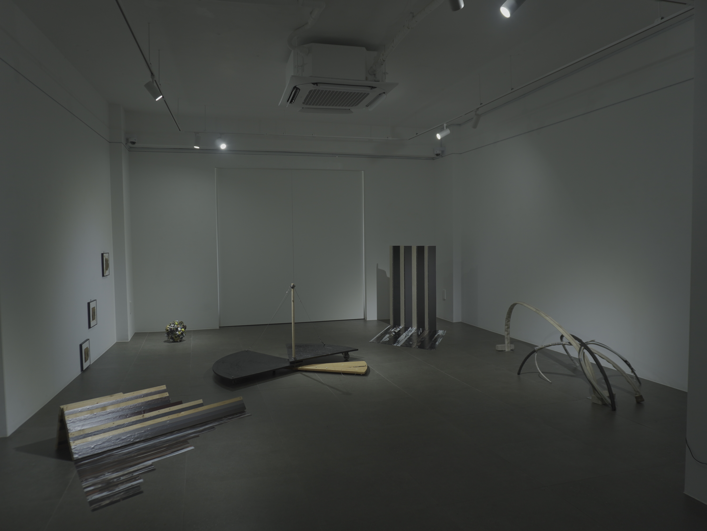
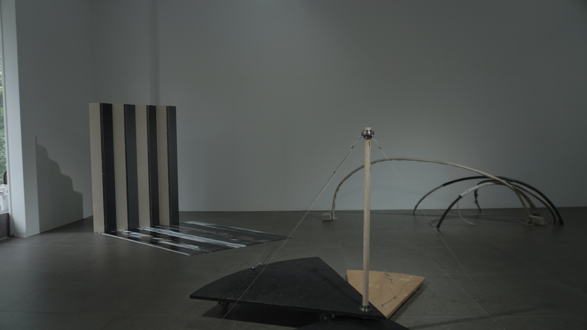
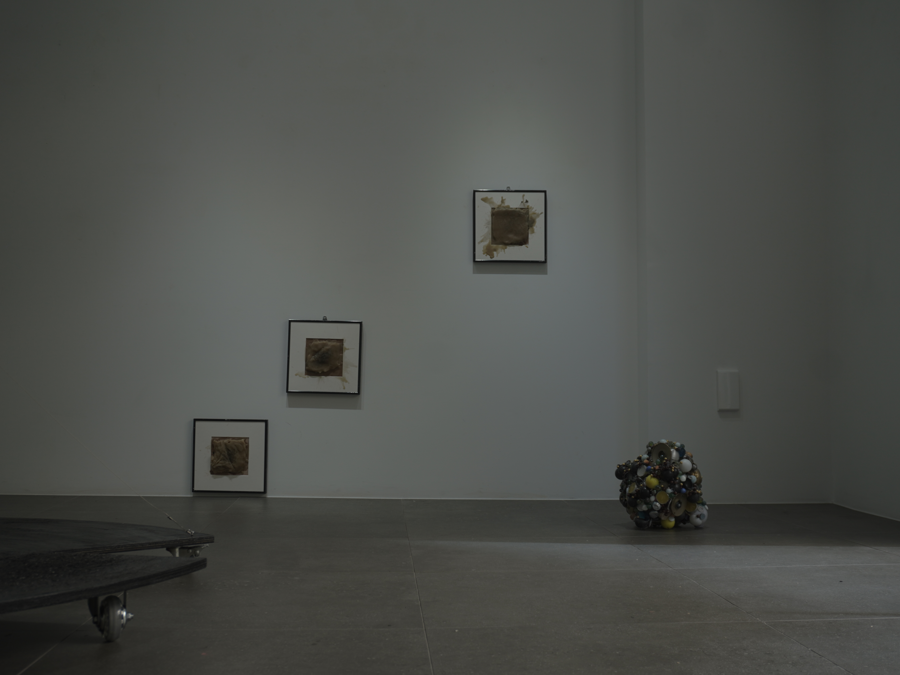
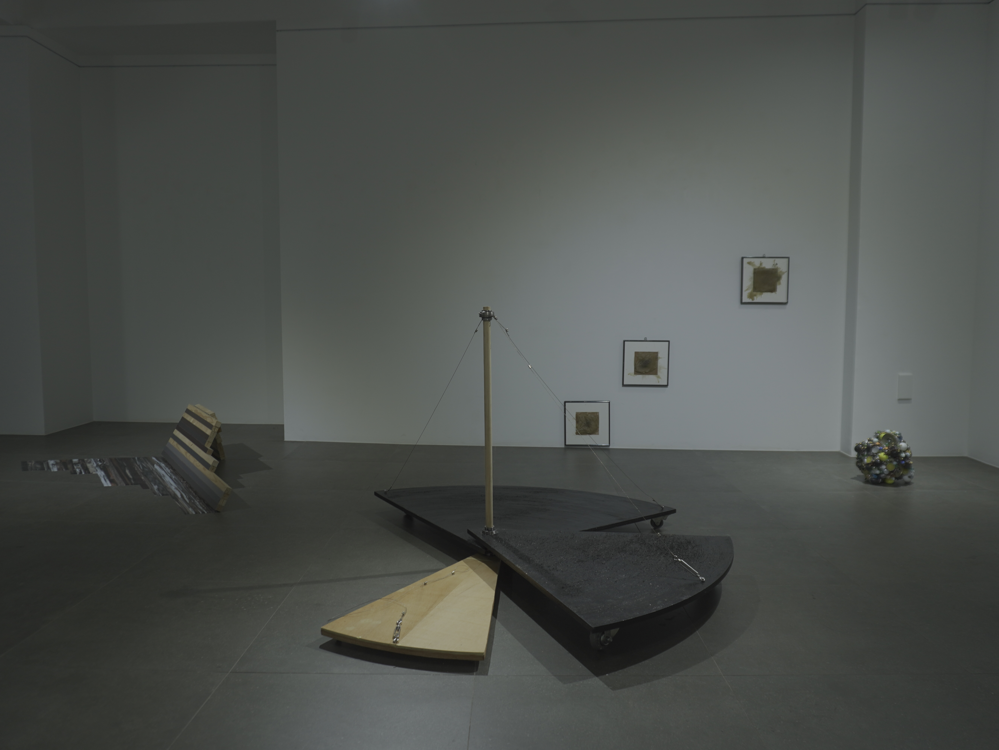
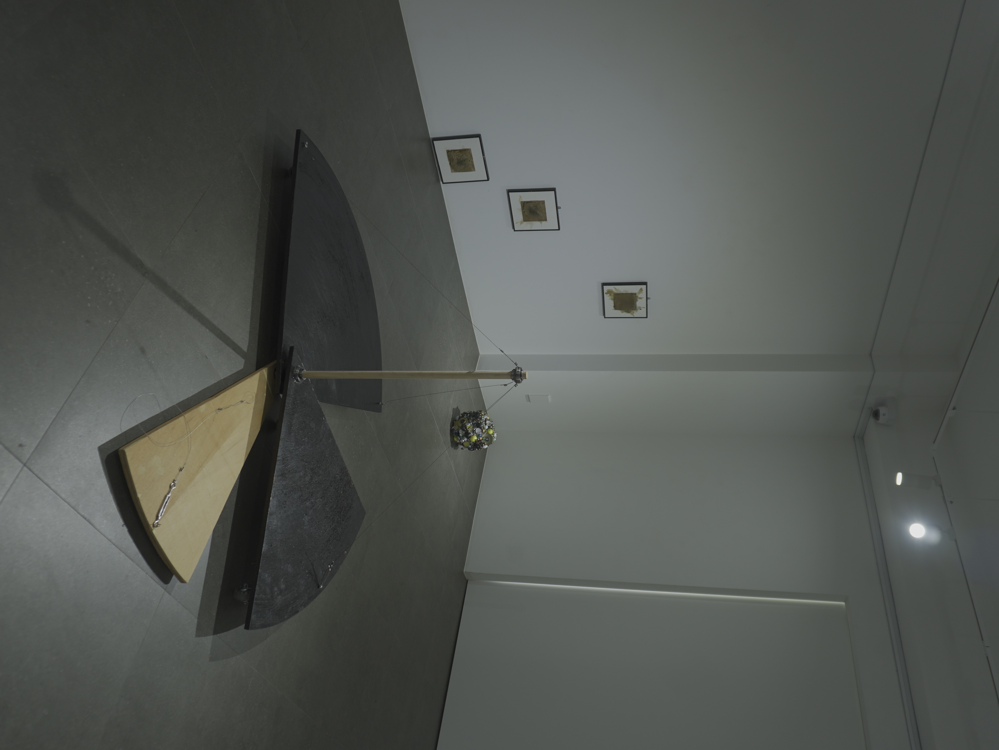
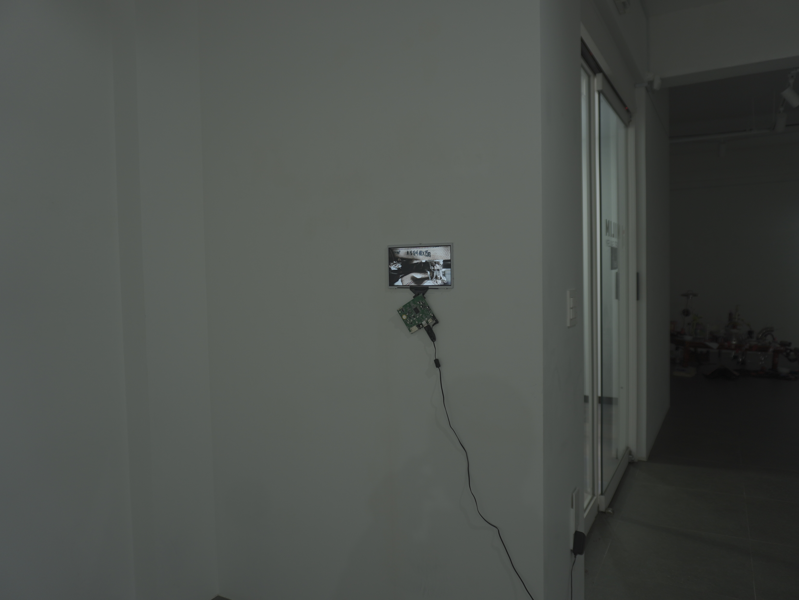

이상조치중
미림아트갤러리
2026.09.16 - 09.21
김보희, 박서연, 홍다린

<행동반경>은 보이지 않는 요소가 신체의 행동 반경에 영향을 미치어 남긴 흔적에 대해 말한다. 작업은 낯선 상황, 공간에 놓여진 인물의 행동을 관찰한 경험에서 비롯되었다. 어떠한 물리적 장애물이나 제시된 사회적 제약이 없었음에도 불구하고 행위자는 스스로 행동의 반경을 좁혀들어갔다. 스스로 정해진 반경 내에서만 머무르고, 다른 공간에 다녀와도 결국엔 다시 돌아와 서 있는 행동이 반복되었다. 행위자에게 내재된 어떠한 것이, 행위자 스스로 행동 가능한 반경에 제한을 두었던 현상, 그 흔적을 구조적 형태로 나타냈다.

<점상>은 불안의 존재방식에 대해 말한다. 소재, 용도, 맥락 등… 상관관계를 찾기 힘든 둥근 물체들이 한데 응집되어있다. 각각의 물체들은 본래 기능과 이름이 있지만, 이 군집 안에서는 그것들이 흐려진 채 전체의 알 수 없는 형상만을 이룬다. 이 형상은 설명하기 어려운 것의 존재방식을 떠올리게 한다.
작가가 느끼는 감각이나 상태와 같은 것은, 그것을 이루어 낸 사건들을 일일이 되짚는다 해도 명확한 하나의 무언가로 규명할 수는 없다. 수많은 사건, 감각, 기억 등은 독립된 점으로 여겨진다. 그러나 그 점들이 모여 형성된 “설명할 수 없는 것”은 요소들이 각자의 맥락을 가진 채 다른 요소들과 뒤섞여 또 다른 하나의 상태를 만들어낸다. 이 구체의 오브제는 설명할 수 없는 것의 형상을 재현해내는 시도가 아니다. 서로 다른 것들이 관계 맺으며 만들어 내는 알 수 없는 상태를 물질 안에서 시험한 결과물이다. 구체는 그것들을 압축해 놓은 하나의 군집이자, 설명할 수 없는 것들과 관계 맺기 위해 만들어낸 물질적 덩어리이다.

<무너짐은 가벼움이 아님을>작업은 <점상> 작업의 원형의 점들이 무작위로 모여 또 다른 구체를 이루는 형상, 즉 불안의 존재방식을 떠올리는 형상을 가지고 시작한다. 세 가지의 밀랍 위에 그 형상을 바늘과 잉크로 새겨넣었다. 그리고 열을 가하여 표면을 녹였다. 각각 열을 가하는 시간에 차이를 두었다. 밀랍이 열에 의해 녹아 이미지가 무너지는 과정이 남았다.
밀랍에 새겨진 점상 이미지는 설명하기 어려운 감각이나 상태를 하나의 형상으로 붙잡아보려는 잠정적인 시도이다. 이 형상의 손상이 곧 존재 자체의 소멸은 아니다. 오히려 처음의 이미지가 대상을 고정하여 설명할 수 없는 정답이 아니었음을 나타내는데에 가깝다. 설명할 수 없는 것을, 다시 설명 불가능한 상태로 되돌려놓는 과정인 것이다. 이는 곧 ‘설명되지 않음’ 상태 자체를 받아들이는 태도이다.
<불안줄 접기 #01>, <불안줄 접기 #02>는 작가의 <불안줄 연작>*과 이어진다. <불안줄 연작>은 작가가 본인의 불안을 다스리기 위해 시작한 설치작업이다. <네 번째 불안줄> 작업 이후, ‘불안줄’을 여러가지 수단으로 표현하기를 시도해보는 실험을 이어가고 있다. ‘불안줄’을 제작하는 행위로서 당장의 불안을 없애보겠다는 내용에서, 지금의 ‘불안줄’은 작가 본인만의 불안만을 다루지 않고 불안이 개인에게 어떻게 인지가 되고 어떤 영향을 미치는지, 사회에서는 어떠한 맥락으로 자리하는지 등으로 확장하여 탐구하고 있다.
기존의 <첫 번째 불안줄>, <두 번째 불안줄> … <네 번째 불안줄>은 불안의 무게를 크기와 중력, 재료, 실제로 점유하는 부피 등 물리적 무게로 표현했다. 그러나 불안은 늘상 공격적이고 요란하지만은 아니다. 오히려 작가가 관찰한 여러 불안들은 조용하고, 묵묵하고, 침잠되어 있는 상태였다. 작가는 불안을 다양한 시선으로 접근하기 위해 그동안의 ‘불안줄’을 표현해왔던 방식과는 완전히 다른 방식을 시도했다.


이전의 <불안줄> 연작의 실재 오브제의 표면을, 접촉식 스캐너로 스캔하여 데이터화 했다. 그리고 데이터가 된 이미지를 평면으로 재구성했다. 스캔된 불안줄은 실재와 비실재 사이 어딘가에 머문다. 접촉식 스캐너는 실물의 표면과 직접 접촉해야 정보를 읽을 수 있기에, 스캔 이미지는 원래의 오브제 상태는 아니지만 완전히 허구적 이미지도 아닌 것이다. 불안줄의 존재 방식이 바뀌는 과정에서 ‘무게’를 감각하는 방식도 달라진다. 불안의 무게는 물리적 성질에 한하지 않는다. 사람의 내면에 얼마나 중요하게 자리하는지, 얼마나 쉽게 떨쳐낼 수 없는지, 인식과 선택에 얼마나 깊이 개입하는지 또한 그것의 무게를 구성한다. 불안줄이 물리적 무게를 잃는다 해도 그것 자체의 ‘무게’까지 사라지는 것은 아니다. <불안줄 스캔 영상>은 스캔한 이미지들을 모은 영상 작업이다. 수백 장의 스캔 이미지가 쏟아져나오는 이 영상 작업은 기존의 ‘불안줄’의 표현 방식과, 작가가 불안을 바라보았던 시선이 전환되었음을 보여주는 개념적 작업이라 할 수 있겠다.


물리적으로 거대하고 무거운 불안줄 원형의 상태와, 비물질의 스캔 데이터화된 불안줄 이미지들. <불안줄 접기>는 그 사이의 상태로 존재한다. 불안줄, 불안, 감정, 반응, 상태…를 접고 싶다는 것에서 출발했다. 작업을 물리적으로도 접고 싶었고, 이 감정 또한 뗄래야 뗄 수 없더라면 접기라도 하고 싶었다. 경첩으로 연결된 이 형태는 포개어 겹쳐 완벽히 접을 수 있다. 물리적인 접기로 부피를 축소시킬 수 있다. 스캔 이미지들의 복잡한 형상들 또한 접었다. 이미지를 접었다는 것은 화면을 실제로 접은 것이 아닌, 이미지의 데이터와 정보량을 함축하여 포개었다는 것이다. 마치 불안을 직면하지 않고 흐려보듯, 이미지에 모자이크와 블러 효과를 반복적으로 넣었다. 그 결과 하나의 색이 되었다. 물리적인 불안은 실제 형태를 접었고, 이미지로 변환된 불안은 한가지 색으로 접었다. 줄어든 부피와 압축된 감정은 그럼에도 불구하고 무게를 잃지 않았다. 오히려 다른 종류의 무게를 지니게 되었다.

다 덜어낸 불안줄, 앙상해진 불안줄, 그러나 실재하는 ‘불안줄’. 불안에 끝이 있다면, 마지막까지 잔존한 ‘불안줄’의 무게는 어떠할지를 그려보는 작업이다. 각 곡선들의 설치 방식도 불안하다. 곡선들끼리 기대어 무게중심을 겨우 만들어 아슬히 서 있다. 온전하지도, 그렇다고 소멸되지도 않은 그 사이의 상태에 머무는 <가벼운 불안줄>만의 또 다른 무게를 보인다.






<이상조치중>展 전시 전경, 미림아트갤러리, 2026.
Courtesy of the artist.